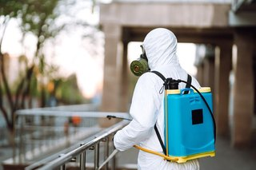

ليش الحشرات ترجع لبيتك بعد الرش مباشرة؟
ترش البيت، وترتاح أسبوع أو أسبوعين، وبعدين تشوف صرصور يمشي في المطبخ بالليل، أو خط نمل جديد عند الشباك. هالشكوى من أكثر اللي نسمعها من أصحاب البيوت في الرياض، وكثير منهم يحسبون إن المبيد كان ضعيف أو إن الشركة ما سوت شغلها. وأحيانًا يكون هذا صحيح، لكن في أغلب الحالات رجوع الحشرات بعد الرش بالرياض له أسباب واضحة تقدر تعرفها وتتعامل معها.
في هالمقال نمشي على خمسة أسباب نشوفها تتكرر، ونشرح لكل واحد منها سبب عودة الحشرات بعد المكافحة بالرياض بالتحديد، ووش الفرق بين رش يحل المشكلة ورش يأجلها بس. ونوضح متى يكون ظهور الحشرات بعد الرش طبيعي، ومتى يكون علامة على فشل رش المبيدات بالرياض.
ليش رجوع الحشرات بعد الرش بالرياض صار شكوى متكررة؟
الحشرات اللي تشوفها في البيت جزء صغير من الموجود. الصرصور اللي يطلع في المطبخ بالليل وراه عشرات مستخبية خلف الدواليب وتحت المغسلة وداخل فتحات الكهرباء، ومعها بيض ما فقس للحين. والنمل اللي يمشي على الرخام جاي من عش ممكن يكون داخل جدار أو تحت بلاط الحوش.
فلما يكون الرش موجه للي يبان بس، يموت جزء من الحشرات الظاهرة، ويبقى الأصل. وبعد أيام أو أسابيع يفقس البيض، أو تطلع حشرات جديدة من نفس المخبأ، فيبان لك إن الرش ما سوى شي. وفي حرارة الرياض، الحشرات نشيطة أغلب السنة، فأي خلل في الرش يبان بسرعة.
متى يكون ظهور الحشرات بعد الرش طبيعي؟
مو كل حشرة تشوفها بعد الرش تعني إنه فشل. بعض المبيدات تشتغل ببطء، والصراصير بالذات ممكن تطلع من مخابئها في الأيام الأولى وهي متأثرة بالمبيد، فتشوفها في أماكن ما تعودت تشوفها فيها، أحيانًا بالنهار، وحركتها بطيئة أو تموت قريب. هالشي ممكن يستمر أيام بعد الرش، وغالبًا يخف بعدها.
لكن لو استمرت الحشرات بنفس الكمية بعد أسبوعين أو ثلاثة، أو كانت تتحرك بنشاط عادي، أو بدأت تزيد، فهنا نتكلم عن مشكلة فعلية، ولازم تعرف سبب عودة الحشرات بعد المكافحة بالرياض قبل ما ترش مرة ثانية بنفس الطريقة.
السبب الأول: رش سطحي يستهدف الحشرات الظاهرة بس
أكثر سبب نشوفه وراء فشل رش المبيدات بالرياض إن الرش يكون على الأرضيات والجدران المكشوفة، وعلى الأماكن اللي شاف فيها صاحب البيت الحشرات. الرش هذا يقتل اللي يمر عليه، لكنه ما يوصل للمكان اللي تعيش فيه الحشرات وتتكاثر.
الصراصير مثلًا تحب الأماكن الضيقة الدافية القريبة من الموية والأكل: خلف الثلاجة والفرن، وتحت المغسلة، وداخل مفصلات الدواليب، وفي فتحات الأفياش ولوحات الكهرباء، وحول مواسير الصرف. والنمل يعيش في مستعمرات لها ملكة، وما دام العش موجود بيرجع النمل مهما رشيت خطوطه. والبق يستخبى في درزات المراتب وخلف ألواح الأسرة وفي شقوق الجدران القريبة من السرير.
الرش الصح يبدأ بفحص: وين المخابئ؟ وين يتجمع البيض؟ ومن وين تدخل الحشرات؟ وبعدها يتوجه العلاج لهالأماكن بالتحديد، بالشكل المناسب لكل مكان، مثل الجل داخل الشقوق والمفصلات، والطعوم قرب مسارات النمل، والرش المتبقي حول الأطراف والمداخل.
- خلف الأجهزة الكبيرة في المطبخ وتحتها
- تحت المغاسل وحول مواسير الصرف
- داخل مفصلات الدواليب وزوايا الأدراج
- فتحات الأفياش وصناديق الكهرباء
- الشقوق بين البلاط والجدار وخلف النعلات
- درزات المراتب وخلف ألواح الأسرة لو المشكلة بق
محتاج تنظيف احترافي؟
الحشرات رجعت بعد الرش؟ فريقنا يحدد مصدرها ومخابئها، ويعالجها بالمبيد المناسب مع متابعة بعد الرش
السبب الثاني: نقاط الدخول ما انقفلت
حتى لو كان الرش ممتاز وقضى على الحشرات اللي داخل البيت، فيه حشرات جديدة تقدر تدخل من نفس الطريق اللي دخلت منه أول مرة. وهنا يكون سبب عودة الحشرات بعد المكافحة بالرياض في البيت نفسه، لأن بابه مفتوح للحشرات.
أشهر نقاط الدخول: فتحات الصرف بدون أغطية أو بأغطية مكسورة، والفراغ تحت الأبواب الخارجية، والشقوق حول مواسير التكييف والموية اللي تدخل من الجدار، وشبك الشبابيك المقطوع أو غير الموجود، وفتحات التهوية بدون شبك. وفي الفلل، الحدائق والحوش وخزانات الصرف القريبة مصدر مستمر للحشرات.
إغلاق هالنقاط بعد الرش نص العلاج. سد الشقوق بمادة مناسبة، وركّب أغطية للصفايات وخل فيها موية باستمرار، وركّب شريط أو فرشاة تحت الأبواب الخارجية، وصلّح الشبك. ولو تجاهلت هالخطوة، فـرجوع الحشرات بعد الرش بالرياض مسألة وقت بس، لأن البيت يرجع يستقبل حشرات جديدة من برا.
الصفايات والبالوعات
الصفايات الأرضية في الحمامات والمطابخ وغرف الغسيل طريق رئيسي للصراصير اللي تعيش في شبكة الصرف. والصفاية اللي ما تُستخدم كثير، مثل صفاية حمام الضيوف أو غرفة الغسيل، تنشف موية مانع الروائح فيها، فتفتح طريق مباشر من المجاري للبيت. صب موية في الصفايات اللي ما تستخدمها مرة في الأسبوع، وركّب لها أغطية محكمة.
السبب الثالث: نوع المبيد ما يناسب الحشرة
كل حشرة لها طبيعة وسلوك، والمبيد اللي ينفع مع نوع ممكن ما ينفع مع ثاني. واستخدام رش واحد لكل الحشرات من الأسباب اللي تتكرر وراء فشل رش المبيدات بالرياض، خصوصًا لما يكون الرش من محل أو من عامل ما يفرق بين أنواع الحشرات.
الصراصير الصغيرة اللي تعيش في المطابخ غير الصراصير الكبيرة اللي تطلع من المجاري، وكل نوع له أماكن ومعالجة مختلفة. والنمل ممكن الرش المباشر عليه يشتت المستعمرة ويخليها تنقسم لأكثر من عش، فتزيد المشكلة بدل ما تقل، وهنا الطعوم اللي ينقلها النمل للعش تكون أنسب في حالات كثيرة. والبق يحتاج معالجة دقيقة للمراتب والأسرة والشقوق، وأحيانًا معالجة حرارية، والرش العام للغرف ما يكفيه.
| الحشرة | وين تستخبى غالبًا | اللي ينفع معها في العادة |
|---|---|---|
| الصراصير الصغيرة | المطبخ، خلف الأجهزة، مفصلات الدواليب | جل وطعوم داخل الشقوق مع رش متبقي محدود |
| الصراصير الكبيرة | الصرف، البالوعات، الحوش | معالجة الصرف وإغلاق الصفايات والرش الخارجي |
| النمل | داخل الجدران، تحت البلاط، الحدائق | طعوم توصل للعش، وتتبع المسار لمصدره |
| البق | المراتب، الأسرة، شقوق قريبة من السرير | معالجة دقيقة متكررة للأسرة والشقوق |
| البعوض والذباب | الموية الراكدة، الحدائق، الزبالة | إزالة أماكن التكاثر مع رش خارجي |
وفيه شي ثاني: الحشرات اللي تتعرض لنفس المبيد مرة ورا مرة ممكن تقل استجابتها له مع الوقت. فلو رشيت بنفس المنتج كذا مرة ونفس النتيجة ترجع، فغالبًا تحتاج تغير طريقة المعالجة، مو تزيد الكمية.
السبب الرابع: الاعتقاد إن مرة وحدة تكفي
كثير من الناس يحسبون إن رشة وحدة تخلص المشكلة للأبد، ولما ترجع الحشرات بعد شهر يقولون إن الرش فشل. وهنا يكون سبب عودة الحشرات بعد المكافحة بالرياض سوء فهم لطريقة العلاج أكثر منه خلل في المبيد. والواقع إن أغلب أنواع الحشرات تحتاج أكثر من زيارة، لأن المبيد ما يوصل لكل البيض في المرة الأولى.
الصراصير مثلًا تحط بيضها في كبسولات صغيرة تحميه، والمبيد ما يوصل له بسهولة. فبعد الرش الأول بأسابيع يفقس جيل جديد، ولو ما كان فيه رش ثاني في الوقت المناسب، يبدأ يتكاثر من جديد. ونفس الشي مع البق، اللي بيضه يفقس بعد الرش بأيام. وهذا يفسر رجوع الحشرات بعد الرش بالرياض في حالات كثيرة: الرش الأول قضى على الموجود، والجيل الجديد طلع من البيض اللي ما وصله المبيد.
الحل إن الخطة تكون من البداية زيارة علاج وزيارة متابعة، والمدة بينهم يحددها الفني حسب نوع الحشرة وحجم المشكلة. وبعدها رش وقائي دوري، خصوصًا في البيوت القريبة من مصادر حشرات مثل الحدائق والمطاعم والعماير القديمة.
الرش الوقائي
الرش الوقائي ينعمل قبل ما تبان المشكلة، على أطراف البيت ومداخله وأماكن الخطر، عشان يمنع الحشرات تستقر من البداية. وتكلفته عادة أقل من علاج إصابة كاملة، وجهده أقل عليك، لأنك ما تحتاج تفضي دواليب المطبخ وتبعد أطفالك عن البيت يوم كامل. والمدة بين الرشات الوقائية تختلف حسب البيت ومكانه وتاريخ المشكلة فيه، والفني اللي فحص البيت هو اللي يقدر يحددها.
السبب الخامس: مصدر خارجي يغذي المشكلة
أحيانًا تسوي كل شي صح في بيتك، والحشرات ترجع. وهنا يكون سبب عودة الحشرات بعد المكافحة بالرياض برا حدودك: شقة جيران فيها إصابة ما تعالجت، أو غرفة زبالة في العمارة ما تنظف، أو مطعم في الدور الأرضي، أو أرض فاضية جنب الفيلا فيها مخلفات، أو شبكة صرف قديمة في الحي.
في العماير، الحشرات تتنقل بين الشقق عبر مواسير الصرف وفتحات الكهرباء والممرات المشتركة. فلو رشيت شقتك وجارك ما رش، بتتحرك الحشرات من عنده لعندك، أو العكس. والحل الأفضل في هالحالة إن العمارة كلها تتعالج في نفس الفترة، أو على الأقل الشقق المتلاصقة وغرفة الزبالة والصرف المشترك.
كلّم مالك العمارة أو الإدارة، ووضح لهم إن فشل رش المبيدات بالرياض في شقة وحدة ممكن يكون سببه المبنى كله. وفي الفلل، اسأل الجيران إذا عندهم نفس المشكلة، لأن الرش المشترك للسور والحدائق المتجاورة يعطي نتيجة أفضل بكثير من رش كل بيت لحاله.
الفرق بين رش فعال ورش مؤقت
الرشين ممكن يبانون نفس الشي يوم التنفيذ: فني، ومضخة، وريحة مبيد، وحشرات ميتة في اليوم الثاني. الفرق يبان بعد أسابيع، وهذا الجدول يوضح وين يختلفون:
| المقارنة | رش فعال | رش مؤقت |
|---|---|---|
| قبل الرش | فحص وتحديد نوع الحشرة ومصدرها | رش مباشر بدون فحص |
| مكان الرش | المخابئ والشقوق ومسارات الحركة | الأرضيات والجدران المكشوفة |
| نوع المبيد | مناسب لنوع الحشرة والمكان | نفس الرش لكل الحشرات |
| نقاط الدخول | توصيات بإغلاقها | ما يتكلم عنها أحد |
| المتابعة | زيارة ثانية في وقت محدد | زيارة وحدة وخلاص |
| النتيجة بعد شهرين | الحشرات قليلة أو معدومة | رجوع تدريجي للمشكلة |
والرش المؤقت مو دايم سببه إهمال من الفني. أحيانًا صاحب البيت يطلب رش سريع ورخيص، ويرفض الفحص أو زيارة المتابعة عشان يوفر. والنتيجة إنه يدفع مرتين أو ثلاث في السنة بدل ما يدفع مرة وحدة على علاج كامل.
واسأل نفسك بعد شهرين من أي رش: هل الحشرات أقل بشكل واضح؟ هل اختفت من المطبخ؟ هل رجعت لنفس الأماكن؟ الإجابات توضح لك نوع الرش اللي حصلت عليه أكثر من اللي شفته يوم التنفيذ.

كيف تضمن نتيجة تدوم بدل ما ترجع للمشكلة بعد أسبوعين؟
النتيجة اللي تدوم تحتاج أربع أشياء مع بعض: فحص يحدد الحشرة ومصدرها، وعلاج موجه للمخابئ بالمبيد المناسب، وإغلاق نقاط الدخول، ومتابعة في الوقت الصح. وأي واحد منها ناقص يفتح الباب لرجوع المشكلة.
وعشان كذا الأفضل تتعامل مع شركة مكافحة حشرات بالرياض تبدأ بالفحص قبل الرش، وتشرح لك وش الحشرة ووين مصدرها، وتستخدم مبيدات مرخصة ومناسبة للبيوت، وتحدد معك موعد زيارة المتابعة من البداية. واسأل الشركة قبل ما تحجز: هل فيه فحص؟ هل فيه زيارة متابعة؟ ووش المطلوب منك قبل الرش وبعده؟ الإجابات توضح لك هل الرش بيكون علاج أو مسكن مؤقت.
- فحص البيت وتحديد نوع الحشرة ومصادرها قبل أي رش
- علاج موجه للمخابئ والشقوق بالشكل المناسب لكل مكان
- مبيدات مرخصة ومناسبة للاستخدام داخل البيوت
- توصيات واضحة لإغلاق نقاط الدخول
- زيارة متابعة في موعد محدد حسب نوع الحشرة
- خطة رش وقائي تناسب البيت ومكانه
ودورك أنت مهم بنفس القدر: تجهز البيت قبل الرش حسب تعليمات الفني، وتلتزم بالتعليمات بعده، وتصلح نقاط الدخول، وتبلّغ عن أي نشاط غير طبيعي قبل موعد المتابعة.
أخطاء بعد الرش تخرب النتيجة
جزء من رجوع الحشرات بعد الرش بالرياض سببه تصرفات بسيطة بعد الرش تضيع مفعوله. أولها التنظيف العميق للأماكن المعالجة في نفس اليوم أو اليوم الثاني. المبيد المتبقي على الأطراف والشقوق يحتاج يقعد فترة عشان يشتغل، والمسح بالموية والمنظفات يشيله. اسأل الفني متى تقدر تمسح الأرضيات، ووين تتجنب المسح.
وثانيها رش بخاخات الحشرات المنزلية فوق مكان الجل أو الطعوم. البخاخ يخلي الصراصير تبتعد عن الطعم، أو يلوثه فيخليه غير جاذب لها. والنتيجة إن الطعم اللي كان المفروض يوصل للمستعمرة كلها ما ينأكل. وكثير من حالات فشل رش المبيدات بالرياض نلقاها في بيوت أهلها رشوا بخاخ فوق الجل بعد الزيارة بيومين، لما شافوا صرصور.
وثالثها ترك مصادر الأكل والموية متاحة: أكل مكشوف، وصحون في المغسلة طول الليل، وأكل الحيوانات الأليفة على الأرض، وحنفية تنقط. الحشرة اللي تلقى أكل وموية بسهولة ما تقرب من الطعم.
مصادر الأكل والموية اللي تغذي الحشرات
الحشرات تدخل البيت تدور على ثلاث أشياء: أكل، وموية، ومكان آمن. وكل ما قلت هالأشياء، كل ما صار الرش أكثر فعالية والبيت أقل جاذبية لها. ولو ما انتبهت لها، يصير رجوع الحشرات بعد الرش بالرياض نتيجة طبيعية حتى مع رش ممتاز.
في المطبخ، امسح الأسطح بعد كل طبخة، ولا تخلي فتات أكل على الأرض أو تحت الأجهزة. خزّن الأكل الناشف مثل الرز والسكر والطحين في علب محكمة، وطلّع الزبالة كل يوم بكيس مربوط. وصلّح أي تسريب تحت المغاسل، ونشّف المغسلة بالليل لو تقدر، لأن الصراصير تقدر تعيش أيام على الموية بس.
وفي باقي البيت، انتبه لأماكن الرطوبة: الحمامات بدون تهوية، وتصريف المكيفات اللي ينقط على الأرض، وأصص الزرع اللي فيها موية راكدة.
الكراتين والأغراض المخزنة
الكراتين من أكثر الأماكن اللي تحبها الصراصير، لأنها دافية وفيها فراغات وتمتص الرطوبة. وكثير من حالات فشل رش المبيدات بالرياض في الشقق يكون وراها مخزن مليان كراتين ما وصله الرش، وإصابات كثيرة تدخل البيت أصلًا مع كراتين التوصيل أو أغراض جاية من مستودع أو بيت ثاني. ولو عندك مخزن مليان كراتين قديمة، فهو مكان مثالي لتكاثر الحشرات بعيد عن أي رش.
طلّع كراتين التوصيل من البيت بعد ما تفضيها، ولا تخزنها في المطبخ أو تحت الدرج. واستبدل الكراتين في المخزن بصناديق بلاستيك محكمة. وقبل الرش، رتّب المخزن عشان يقدر الفني يوصل لزواياه.
حرارة الرياض ونشاط الحشرات
الحرارة تسرّع دورة حياة كثير من الحشرات، والبيوت المكيفة في صيف الرياض تصير ملجأ لها من الحر برا. فتلاحظ إن نشاط الصراصير والنمل يزيد في الشهور الحارة، خصوصًا حول المطابخ والحمامات وغرف الغسيل.
وهذا ما يعني إن الشتاء آمن. الحشرات داخل البيوت تلقى حرارة ورطوبة مناسبة طول السنة، وتتكاثر بهدوء. لكن الرش الوقائي قبل بداية الصيف يقلل عدد الحشرات قبل ما تبدأ موجة النشاط، ويخفف احتمال رجوع الحشرات بعد الرش بالرياض في الفترة اللي تكون فيها الحشرات في أعلى نشاطها.
الشقق والعماير مقابل الفلل
في الشقق، سبب عودة الحشرات بعد المكافحة بالرياض غالبًا يكون مشترك بين أكثر من شقة. الصرف واحد، والجدران مشتركة، وغرفة الزبالة للكل. ورش شقة وحدة يحل جزء من المشكلة، لكن الحشرات ممكن ترجع من الشقق المجاورة أو من الصرف. ولهالسبب يكون تنسيق الرش مع الجيران أو إدارة العمارة مهم.
وفي الفلل، المساحة أكبر والمصادر أكثر: حدائق، وحوش، وغرف خارجية، وخزانات صرف، وأحيانًا أراضي فاضية جنبها. والرش الداخلي لحاله ما يكفي، لازم يكون فيه رش خارجي للأطراف والسور والحديقة ومداخل الصرف. ومن أكثر ما نشوفه في الفلل إن الرش يكون داخل البيت بس، فيرجع النمل والصراصير من الحوش خلال أسابيع.
الجل والطعوم: ليش تشتغل ببطء؟
كثير من الناس يتوقعون إن الحشرات تموت في نفس الليلة، ولما يشوفون صراصير بعد يومين من وضع الجل يحسبون إنه ما نفع، ويحكمون بـفشل رش المبيدات بالرياض بدري. والجل والطعوم مصممة تشتغل ببطء بقصد: الصرصور ياكل منها ويرجع لمخبأه، وهناك ينتقل أثرها لصراصير ثانية ما طلعت أبد.
وكثير مما يبان وكأنه رجوع الحشرات بعد الرش بالرياض في أول يومين هو المرحلة اللي يشتغل فيها العلاج. هالبطء هو اللي يخلي الطعوم توصل للمستعمرة كلها بدل ما تقتل اللي يمر قدامك بس، والمدة تختلف حسب نوع الحشرة وحجم الإصابة، وغالبًا تشوف فرق واضح خلال أسبوع إلى أسبوعين.
تجهيز البيت قبل الرش
قليل اللي ينتبه وهو يدور على سبب عودة الحشرات بعد المكافحة بالرياض إن النتيجة تبدأ قبل ما يوصل الفني. لو كانت دواليب المطبخ مليانة، والأجهزة ملاصقة للجدار، والمخزن مقفول بالكراتين، ما يقدر يوصل للمخابئ، فيرش اللي يقدر عليه بس.
أماكن ما انرشت لأنها كانت مقفلة ومليانة تفسر جزء من فشل رش المبيدات بالرياض، فاسأل الشركة وش المطلوب قبل الزيارة. في العادة تفضي الدواليب السفلية في المطبخ وتحت المغاسل، وتغطي الأكل أو تطلعه، وتبعد الأجهزة الصغيرة عن الجدار، وتطلع الحيوانات الأليفة. والبيت المجهز يوصل فيه الفني لكل زاوية.
البخاخات المنزلية ورش المحلات
جزء كبير من رجوع الحشرات بعد الرش بالرياض نشوفه في بيوت تعتمد على بخاخ السوبرماركت. البخاخ يقتل الحشرة اللي يصيبها مباشرة، لكنه ما يوصل للمخابئ ولا للبيض، وأثره ما يطول. وكثير من البيوت تعتمد عليه لشهور، ترش كل ما شافت صرصور، وتستغرب ليش المشكلة ما تخلص.
والبخاخ ينفع لموقف سريع، لكن الاعتماد عليه بدل علاج كامل يخلي فشل رش المبيدات بالرياض يتكرر كل كم أسبوع. والرش العشوائي فيه ممكن يشتت الحشرات لأماكن جديدة في البيت، خصوصًا النمل، فتلقاها في غرف ما كانت توصلها، واستخدامه فوق مكان العلاج المتخصص يضر النتيجة بدل ما يساعدها.
النمل: ليش يرجع من نفس المكان؟
مع النمل بالذات، أشهر سبب عودة الحشرات بعد المكافحة بالرياض هو المسار. النمل يمشي على مسارات ثابتة يتركها بروائح يتبعها باقي النمل. فلما ترش الخط اللي تشوفه، يموت النمل اللي عليه، لكن المسار يبقى معلّم، والعش يرسل نمل جديد بعد أيام.
ولو تكرر رجوع الحشرات بعد الرش بالرياض مع النمل في نفس المكان، فغالبًا العش ما انوصل له. العلاج الأنسب يتتبع المسار لمصدره: شق في البلاط، أو فتحة عند إطار الشباك، أو جذور شجرة في الحوش. والطعوم اللي ياخذها النمل للعش توصل للملكة، وبدونها ما ينتهي العش. وبعد العلاج، امسح مسارات النمل بموية وصابون عشان تشيل الروائح، وسد نقطة الدخول.
الصراصير الصغيرة في المطبخ
الصراصير الصغيرة اللي تعيش في المطابخ تتكاثر بسرعة، وتستخبى في أماكن ضيقة جدًا: مفصلات الدواليب، وداخل الأجهزة الكهربائية، وتحت أسطح الرخام، وخلف ورق الجدران المنفصل. وأي رش ما يوصل لهالأماكن يترك جزء كبير منها حي، وهذي من أكثر صور فشل رش المبيدات بالرياض اللي نقابلها في الشقق.
وكثير من الحالات اللي ندور فيها على سبب عودة الحشرات بعد المكافحة بالرياض في المطبخ نلقى الصراصير عايشة داخل الأجهزة نفسها، مثل الميكروويف والثلاجة من تحت ومحرك غسالة الصحون، والفني ما يقدر يرش داخلها بالمبيد العادي. هنا ينفع الجل في الأطراف والشقوق القريبة، مع تنظيف الأجهزة من بقايا الأكل.
البق: أصعب حشرة ترجع
البق من أكثر الحشرات اللي يشتكي أصحابها من رجوع الحشرات بعد الرش بالرياض. يعيش قريب من مكان نومك، ويطلع بالليل، ويستخبى في درزات المراتب وخلف ألواح الأسرة وفي شقوق الجدران والأثاث القريب. وبيضه صغير جدًا ويلصق في الأقمشة والخشب، فأي معالجة تفوت جزء منها ترجع المشكلة بعد أسابيع.
ومن سبب عودة الحشرات بعد المكافحة بالرياض اللي ما تتوقعها نقل الأثاث المصاب لغرفة ثانية قبل العلاج، لأنه ينشر البق في البيت كله، فخل الأثاث في مكانه لين يفحصه الفني. والعلاج نفسه يحتاج فحص دقيق، ومعالجة مركزة للأسرة والمراتب والشقوق، وغسيل المفارش والملابس بموية حارة، وغالبًا أكثر من زيارة.
الحدائق والحوش
الحديقة مصدر دائم للحشرات: نمل في التربة، وصراصير في الأخشاب والأوراق المتراكمة، وبعوض في الموية الراكدة. والحوش المتصل بالبيت يخليها تدخل من الأبواب والشبابيك القريبة. وفي الفلل، سبب عودة الحشرات بعد المكافحة بالرياض يكون أحيانًا حديقة ما انرشت أبد، مع إن البيت من داخل انرش أكثر من مرة.
الرش الداخلي بدون خارجي يفسر كثير من فشل رش المبيدات بالرياض في الفلل. نظف الحديقة من الأوراق والأخشاب المتراكمة، ولا تخلي موية راكدة في الأصص أو الصحون أو مجاري الري. وقص الأغصان اللي تلمس جدار البيت، لأنها جسر للنمل. واطلب من الشركة رش خارجي للأطراف والسور ومداخل الصرف.
الزبالة وحاوياتها
الزبالة أكبر مصدر أكل للحشرات في أي بيت. سلة المطبخ المكشوفة، وأكياس تنترك عند الباب لين الصبح، وحاوية الحوش اللي ما تنغسل، كلها تجذب الصراصير والذباب والنمل. ولو ما تغير هالشي، يصير رجوع الحشرات بعد الرش بالرياض شبه مؤكد مهما كان الرش ممتاز، لأن الحشرة اللي تلقى أكل كل يوم ما تحتاج تقرب من الطعم.
استخدم سلة بغطاء محكم في المطبخ، وطلّع الزبالة كل ليلة، واغسل السلة والحاوية بموية وصابون كل فترة. وفي العماير، كثير من حالات سبب عودة الحشرات بعد المكافحة بالرياض ترجع لغرفة الزبالة المشتركة، فطالب الإدارة بتنظيفها ورشها بانتظام.
التنظيف والمكافحة يكملون بعض
البيت النظيف أصعب على الحشرات، لكن التنظيف لحاله ما يقضي على إصابة موجودة، والرش لحاله ما يمنعها ترجع لو البيت فيه أكل ورطوبة ومخابئ. وفي حالات كثيرة يكون سبب عودة الحشرات بعد المكافحة بالرياض إن البيت انرش وهو مليان دهون في المطبخ وبقايا أكل خلف الأجهزة، فرجعت الحشرات تلقى نفس البيئة.
وجزء من فشل رش المبيدات بالرياض اللي يبان كأنه ضعف في المبيد سببه هالبيئة نفسها. والترتيب اللي ينفع غالبًا: تنظيف عميق للمطبخ والحمامات قبل الرش بأيام، يشيل الدهون وبقايا الأكل ويكشف المخابئ، بعدين الرش، وبعده تنظيف يومي خفيف بدون ما تمسح الأماكن المعالجة لين يسمح الفني.
سجّل ملاحظاتك بعد الرش
من يوم الرش، اكتب في جوالك أي حشرة تشوفها: نوعها، ومكانها، والتاريخ، وهل كانت حية تتحرك أو بطيئة أو ميتة. وصوّرها إذا قدرت. هالسجل البسيط يوضح لك ولشركة المكافحة هل النشاط يقل مع الوقت أو يزيد.
بدون هالمعلومات، ممكن يتشخص فشل رش المبيدات بالرياض غلط ويتكرر نفس العلاج اللي ما نفع. أما مع السجل، فلو صار رجوع الحشرات بعد الرش بالرياض بعد فترة، يقدر الفني يحدد السبب بسرعة: هل الحشرات جاية من مكان واحد؟ هل هي نفس النوع؟ هل ظهرت بعد ما رشيت بخاخ أو نظفت مكان معين؟
كيف تختار شركة المكافحة؟
السعر الأقل مو دايم الأوفر. اسأل الشركة: هل يفحصون البيت قبل الرش؟ هل يحددون نوع الحشرة ويختارون المبيد على أساسه؟ هل المبيدات مرخصة ومناسبة للبيوت؟ هل فيه زيارة متابعة؟ ووش التعليمات قبل الرش وبعده؟
الشركة اللي تقول لك رشة وحدة وخلاص بدون ما تشوف البيت، احتمال فشل رش المبيدات بالرياض معها أعلى، لأنها تتعامل مع كل البيوت بنفس الطريقة. واللي تجاوب بوضوح وتشرح لك سبب عودة الحشرات بعد المكافحة بالرياض في بيتك قبل ما تبدأ، غالبًا بتعطيك نتيجة أطول.
الحمامات وفتحات التهوية
الحمامات فيها موية ورطوبة وصفايات متصلة بالمجاري، فتكون من أول الأماكن اللي ترجع لها الحشرات. والصراصير الكبيرة بالذات تطلع من الصفايات والبالوعات بالليل، والحمام اللي فيه تهوية ضعيفة يقعد رطب ساعات بعد الاستحمام.
شغّل الشفاط بعد الاستحمام، ونشّف الأرضية، وتأكد إن أغطية الصفايات محكمة. وشوف فتحة الشفاط نفسها: لو ما عليها شبك، أو الشبك مقطوع، فهي طريق مفتوح من السقف أو من برا. وأي تسريب تحت المغسلة أو خلف الكرسي صلّحه بسرعة، لأن الموية المستمرة تجذب الحشرات أكثر من أي أكل.
الذباب والبعوض حول البيت
الذباب والبعوض يختلفون عن الصراصير والنمل، لأن مصدرهم غالبًا برا البيت. البعوض يتكاثر في أي موية راكدة، حتى لو كانت كمية صغيرة في صحن أصيص أو غطاء مقلوب في الحوش أو مجرى تكييف مسدود. والذباب ينجذب للزبالة وبقايا الأكل والحيوانات.
الرش ضدهم يقلل العدد لفترة، لكن لو بقيت أماكن التكاثر، يرجعون بسرعة. فتّش الحوش والسطح والحديقة عن أي موية راكدة وفضّها، وغطِ الخزانات والبراميل، وركّب شبك على الشبابيك والأبواب اللي تنفتح كثير.
لو بتنتقل لبيت جديد
الانتقال فرصة تبدأ فيها بدون حشرات. البيت اللي كان مسكون قبلك ممكن تكون فيه إصابة ما تبان وهو فاضي، لأن الحشرات تستخبى لما ما يكون فيه أكل. وأول ما تدخل أغراضك وتبدأ تطبخ، تطلع من جديد.
الأفضل تفحص البيت وترشه وهو فاضي قبل ما تدخل الأثاث، لأن الفني يوصل لكل زاوية بسهولة. وافحص أغراضك نفسها قبل ما تنقلها، خصوصًا الكراتين اللي كانت مخزنة فترة طويلة، والأثاث المستعمل، والمراتب، لأنها ممكن تنقل الإصابة معك من البيت القديم.
الأرضة في الفلل
الأرضة، أو النمل الأبيض، حشرة تختلف في طريقة علاجها عن باقي الحشرات. تعيش في التربة وتوصل للخشب في البيت عبر أنابيب طين صغيرة تبنيها على الجدران والأساسات، وتاكل الأبواب والإطارات والأثاث الخشبي من الداخل، فيبان الخشب سليم من برا وهو مفرغ.
الرش العادي داخل البيت ما يوصل لمستعمرة الأرضة في التربة، فتشوف نشاطها يرجع حتى بعد الرش. علاجها يحتاج شركة متخصصة تحدد مكان المستعمرة وتعالج التربة حول البيت. ولو لقيت أنابيب طين على جدار، أو خشب يطلع صوته مجوف لما تدق عليه، أو أجنحة صغيرة متساقطة قرب الشبابيك، لا تكسر الأنابيب ولا ترش عليها، صوّرها واطلب فحص متخصص.
القوارض وأصواتها
لو تسمع خربشة في السقف أو داخل الجدران بالليل، أو تلقى فضلات صغيرة في المخزن أو المطبخ، أو آثار قرض على أكياس الأكل والأسلاك، فغالبًا المشكلة قوارض. والرش ضد الحشرات ما يأثر عليها، وعلاجها يحتاج طريقة مختلفة تمامًا.
سد أي فتحة حول المواسير والأبواب، لأن الفأر الصغير يدخل من فتحات أصغر مما تتوقع. وخزّن الأكل في علب محكمة، ولا تخلي أكل حيوانات أليفة مكشوف بالليل. وخل التعامل مع المصائد والطعوم لشركة متخصصة، خصوصًا لو في البيت أطفال أو حيوانات أليفة.
الأثاث المستعمل والمفارش
الكنب والمراتب والأسرة المستعملة من أشهر الطرق اللي يدخل فيها البق للبيوت، والكراتين والأجهزة المستعملة ممكن تجيب معها صراصير أو بيضها. والإصابة اللي تدخل بهالطريقة تبان بعد أسابيع، فيحسبها صاحب البيت مشكلة جديدة ما لها علاقة بالرش.
قبل ما تدخل أي قطعة مستعملة، افحص الدرزات والزوايا والشقوق بالكشاف، ودوّر على بقع صغيرة داكنة أو قشور أو حشرات ميتة. والأجهزة المستعملة نظفها من تحت ومن ورا قبل ما تدخلها المطبخ. وأي قطعة تشك فيها، خلها برا البيت لين تتأكد منها.
ريحة المبيد بعد الرش
كثير من الناس يربطون قوة الريحة بقوة المبيد، فلو كانت الريحة خفيفة يحسبون الرش ضعيف. والواقع إن بعض المبيدات الفعالة ريحتها خفيفة أو ما لها ريحة تقريبًا، والجل والطعوم بالذات ما تطلع ريحة تذكر.
بعد الرش، هوّي البيت حسب تعليمات الفني، وافتح الشبابيك وشغّل الشفاطات للمدة اللي يحددها. ولو استمرت ريحة قوية لأيام، أو حس أحد في البيت بتهيج أو ضيق، تواصل مع الشركة واسأل عن المبيد المستخدم.
المحلات والمطاعم تحت الشقق
الشقق اللي فوق مطاعم أو بقالات أو محلات أكل تكون معرضة أكثر، لأن هالمحلات فيها أكل وزبالة ورطوبة بكميات كبيرة، وصرفها متصل بصرف العمارة. والحشرات اللي تتكاثر عندهم تطلع للشقق عبر المواسير وفتحات الخدمات.
لو شقتك فوق محل من هذا النوع، ركّز على إغلاق الصفايات وفتحات المواسير في المطبخ والحمامات، واطلب رش وقائي أقرب من المعتاد. وكلّم إدارة العمارة عن برنامج المكافحة في المحلات نفسها، لأن علاج شقتك لحاله ما يوقف المصدر.
الأطفال والحيوانات الأليفة وقت الرش
سلامة أهل البيت جزء أساسي من أي رش. اسأل الفني عن المدة اللي تحتاج تطلع فيها من البيت، ومتى تقدر ترجع، وكم وقت تحتاج تهوية. والتزم بالتعليمات بالضبط، خصوصًا لو في البيت أطفال صغار أو كبار سن أو أحد عنده حساسية.
والحيوانات الأليفة لازم تطلع من البيت وقت الرش، مع أكلها وصحونها. وأحواض السمك تنغطى ويطفى فيها الهواء حسب تعليمات الفني. وبعد الرجوع، لا تخلي الأطفال يلعبون على الأرض أو قرب الأطراف المعالجة لين يقول لك الفني إنها صارت آمنة.
أول شهر بعد الرش: وش تتوقع؟
في الأيام الأولى بعد الرش، ممكن تشوف حشرات ميتة أو بطيئة في أماكن غريبة، وأحيانًا تشوف أكثر من العادة، لأنها تطلع من مخابئها وهي متأثرة. نظف الميت منها أول بأول بمنديل، بدون ما تمسح الأطراف المعالجة.
بعد أسبوع إلى أسبوعين، المفروض النشاط يقل بشكل واضح. ولو ظهرت صراصير صغيرة جدًا في هالفترة، فهذا غالبًا من بيض فقس، وزيارة المتابعة مصممة لهالمرحلة بالذات. وبعد زيارة المتابعة، يصير ظهور الحشرات نادر، ويكون غالبًا حشرة جاية من برا مو من داخل البيت.
ولو مر شهر والحشرات بنفس الكمية أو أكثر، فهذا مو طبيعي، وتحتاج تراجع مع الشركة نوع الحشرة ومكان المصدر وطريقة العلاج.
المكيفات وتصريفها
المكيفات تطلع موية من خط التصريف، ولو كان الخط ينقط على الأرض أو على جدار، يصير مصدر رطوبة مستمر تحبه الصراصير والنمل. ووحدات المكيف الشباك بالذات فيها فراغات تدخل منها الحشرات من برا، وأحيانًا يعشش النمل داخلها.
تأكد إن خط التصريف موجه بعيد عن البيت، أو موصول بصرف مناسب، وإن ما فيه موية تتجمع تحته. وسد الفراغات حول المكيف الشباك من داخل ومن برا بمادة مناسبة. ونظف فلاتر المكيفات بانتظام، لأن الغبار والرطوبة فيها يجذبون حشرات صغيرة. ولو شفت نمل يطلع من فتحات المكيف داخل الغرفة، قل للفني، لأن المعالجة هنا تكون حول الوحدة من برا.
المخازن والملاحق
المخزن وغرفة السائق وغرفة الخدامة والملحق الخارجي أماكن تتنسى في الرش، لأنها بعيدة عن المطبخ وما يشوف فيها صاحب البيت حشرات كثير. لكنها هادية ومظلمة، وفيها كراتين وأغراض قديمة، فتصير مكان تتكاثر فيه الحشرات وتطلع منه للبيت.
رتّب هالأماكن قبل الرش، واطلب من الفني يشملها في العلاج. وفي الملاحق اللي فيها مطبخ صغير أو حمام، طبّق نفس قواعد المطبخ الرئيسي: أكل مخزن صح، وزبالة تطلع، وصفايات مغطاة.
متى تتصل بالشركة مرة ثانية؟
فيه علامات تقول إن العلاج يحتاج مراجعة. لو لاحظت رجوع الحشرات بعد الرش بالرياض بنشاط واضح بعد أسبوعين أو ثلاثة، أو صرت تشوف صراصير صغيرة جدًا، وهذي علامة إن فيه بيض فقس، أو لقيت فضلات جديدة في الدواليب، أو رجعت خطوط النمل لنفس المكان، فهذي كلها أسباب تتصل.
لا تنتظر موعد المتابعة لو المشكلة واضحة، ولا ترش بنفسك بخاخات فوق مكان العلاج. صوّر الحشرات والمكان، وأرسلها للشركة، لأن الصور تساعد الفني يعرف نوع الحشرة ويجي جاهز.
علامات إن المشكلة أكبر من رش عادي
بعض الحشرات تحتاج تعامل خاص والرش العادي ما يكفيها، مثل الأرضة والقوارض اللي شرحنا علاماتها فوق. ومعها البق، اللي يترك بقع صغيرة داكنة على المراتب، ولسعات متجمعة في خط على الجلد.
لو لاحظت أي علامة من هذي، قل للشركة قبل الزيارة، عشان يجيبون المعدات المناسبة. والتعامل معها كأنها صراصير عادية من أكثر الأسباب اللي تخلي المشكلة تكبر بدل ما تنحل.
نصيحة من فريق نقاء
من شغلنا في مكافحة الحشرات في بيوت الرياض، أغلب الحالات اللي يقول أصحابها إن الرش فشل يكون فيها واحد من ثلاث أشياء: رش سطحي بدون فحص، أو نقاط دخول مفتوحة، أو غياب زيارة المتابعة. وفيه حالات قليلة يكون السبب فيها المبنى كله.
قبل ما تحكم إن المبيد ضعيف، اسأل: هل انفحص البيت؟ هل انعالجت المخابئ؟ هل انقفلت نقاط الدخول؟ هل فيه متابعة؟ لو كانت الإجابة لا على أي سؤال، فهنا غالبًا يكون سبب عودة الحشرات بعد المكافحة بالرياض في حالتك.
خلاصة سريعة
رجوع الحشرات بعد الرش بالرياض غالبًا يرجع لرش سطحي ما وصل للمخابئ، أو نقاط دخول مفتوحة، أو مبيد ما يناسب نوع الحشرة، أو غياب زيارة المتابعة، أو مصدر خارجي من الجيران أو المبنى.
وعلاج فشل رش المبيدات بالرياض يبدأ من الفحص قبل الرش، ويكمل بعلاج موجه وإغلاق نقاط الدخول ومتابعة في وقتها، مع التزامك بالتعليمات وتقليل مصادر الأكل والموية في البيت.
أسئلة شائعة عن رجوع الحشرات بعد الرش
الخاتمة
رجوع الحشرات بعد الرش في الرياض له أسباب تقدر تحددها في أغلب الحالات: وين انرش، وبأي مبيد، وهل انقفلت نقاط الدخول، وهل كان فيه متابعة. ولما تعرف السبب في بيتك، تعرف وش تطلب في المرة الجاية بدل ما تعيد نفس الرش.
وفريق مؤسسة نقاء يغطي كل أحياء الرياض بخدمة مكافحة حشرات تبدأ بالفحص، وتعالج المخابئ بالمبيد المناسب، وتتابع معك بعد الرش.
✨ خلّص من الحشرات بنتيجة تدوم
كلمنا على واتساب، ونرتب لك زيارة فحص وعلاج للحشرات في بيتك
احجز الآن مع نقاء للتنظيف
مكافحة حشرات تبدأ بالفحص وتنتهي بالمتابعة، عشان ما ترجع المشكلة
- فحص البيت وتحديد نوع الحشرة ومصدرها
- علاج المخابئ والشقوق بالمبيد المناسب
- توصيات لإغلاق نقاط الدخول
- زيارة متابعة في موعد محدد